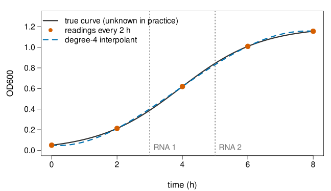
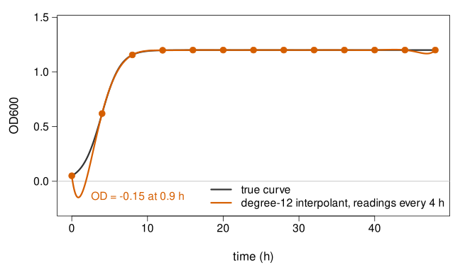
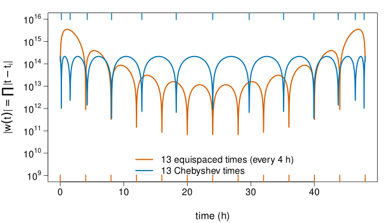
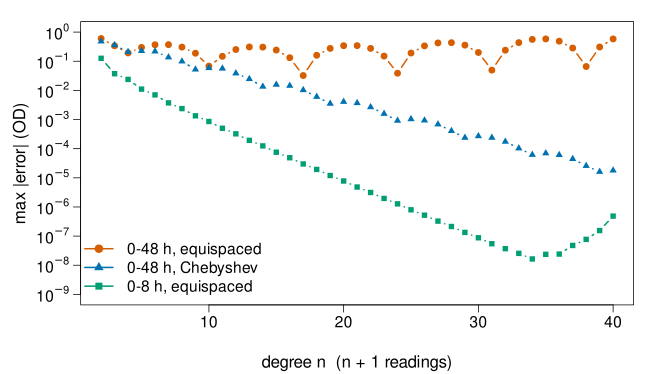
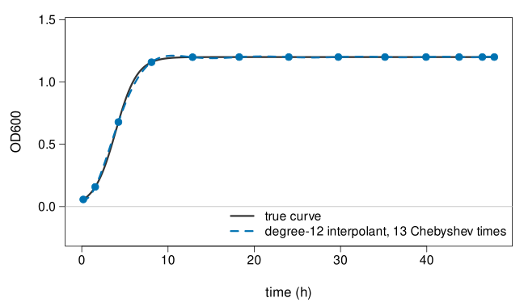
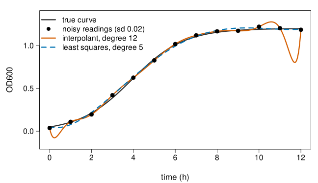
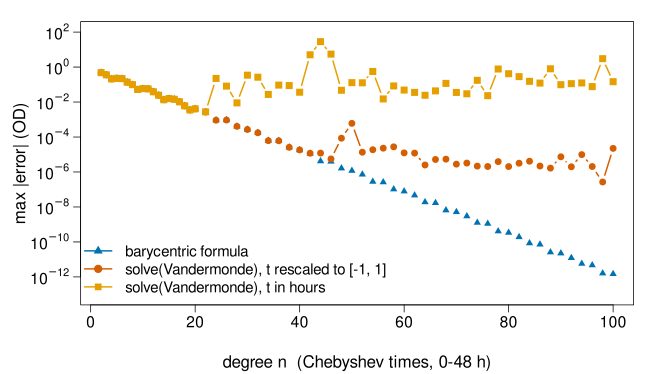

Measurements come at a few time points; questions are asked in between. This lecture is about drawing one polynomial through all the points, and about when that is a bad idea.
Through n+1 points there is exactly one polynomial of degree \le n. Three ways to write it: monomial (Vandermonde), Lagrange, Newton (divided differences).
The interpolation error has a formula: a derivative of the curve times the node polynomial\prod (t - t_i).
With equally spaced time points, a high degree makes things worse, not better: the Runge phenomenon. Chebyshev points fix it.
Interpolation reproduces noise exactly; with noisy data, fit instead (least squares).
Evaluate with the barycentric formula, not with monomial coefficients.
A biology problem first

A culture is read every 2 h (red). RNA was extracted at 3 h and 5 h, between readings. What was the OD then?
The truth is our logistic curve, N(t) = K/(1 + (K/N_0 - 1)e^{-rt}), K = 1.2, N_0 = 0.05, r = 0.8 per hour. In the lab you only have the dots.
The same question for a gene-expression time course: values at 0, 1, 2, 4, 8 h, and you want 3 h.
One polynomial through all the points
n+1 readings at distinct times t_0, \dots, t_n → exactly one polynomial p(t) = c_0 + c_1 t + \dots + c_n t^n with p(t_i) = y_i. Two points: a line; three: a parabola.
The conditions p(t_i) = y_i are a square linear system with the Vandermonde matrix:
Degree 4 through t = 0, 2, 4, 6, 8, with \max |f^{(5)}| = 0.0983 on [0, 8]:
t
w(t)
bound \frac{0.0983}{120}\,\lvert w(t)\rvert
actual \lvert f - p\rvert
3 (middle)
3\cdot1\cdot(-1)(-3)(-5) = -45
0.037
0.014
1 (near the end)
1\cdot(-1)(-3)(-5)(-7) = 105
0.086
(exercise)
The bound holds; it is pessimistic because it uses the largest derivative.
The same nodes are 2.3 times worse near the ends: |w| is larger there.
A longer run: 48 h, a reading every 4 h

13 readings, so a degree-12 interpolant. It passes through every reading, and dips to OD = −0.15 at 0.9 h: a negative cell density.
It also wiggles in stationary phase near 44–48 h. In the middle it is fine.
This is the Runge phenomenon (Carl Runge, 1901).
Why the ends? The node polynomial

Equispaced (red): |w(t)| is about 300 times larger between the first two readings than in the middle.
The error is |f^{(13)}(\xi)|/13! \times |w(t)|: the same derivative factor, multiplied by a much larger w at the ends.
Chebyshev times (blue, ticks on top) are crowded towards the ends, and |w| is level across the whole run.
More readings make it worse

0–8 h, equispaced (green): error falls with n, by a factor \approx 1.6 per extra reading, until rounding sets in near 10^{-8}.
0–48 h, equispaced (red): error jumps between 0.03 and 0.6 OD and does not converge.
0–48 h, Chebyshev (blue): falls steadily, 2\times10^{-5} at n = 40.
Chebyshev nodes
On [-1, 1]: x_k = \cos\!\left(\dfrac{(2k+1)\pi}{2n+2}\right), k = 0, \dots, n. On [a, b]: t_k = \tfrac{a+b}{2} - \tfrac{b-a}{2}\,x_k.
They are the projections of equally spaced points on a semicircle, so they crowd at the ends.
n <-12; k <-0:ntc <-24-24*cos((2* k +1) * pi / (2* n +2)) # 13 times in [0, 48] hround(tc, 2)# [1] 0.17 1.56 4.25 8.09 12.85 18.26 24.00 29.74 35.15 39.91 43.75 46.44# [13] 47.83
They minimise \max |w(t)|: the smallest possible value is 2\left(\tfrac{b-a}{4}\right)^{n+1}.
For a smooth curve the error then falls geometrically with n.
Chebyshev times on the same run

Same 13 readings’ worth of effort, same degree 12. Largest error 0.039 OD instead of 0.25, no negative OD.
In practice you rarely choose the times freely. With the times you have, use low degree, locally: a line between neighbours (approx), or the cubic splines of the next lecture.
approx(t, y, xout =c(3, 5))$y # piecewise linear, 0-8 h readings# [1] 0.4159873 0.8141777 # errors 0.027, -0.030
Interpolation vs fitting

Hourly readings over 12 h with plate-reader noise (sd 0.02 OD). The degree-12 interpolant goes through the noise and swings to 0.39 OD off near the ends.
A degree-5 least-squares fit (blue) ignores the noise: error 0.032. Without noise, the interpolant’s error was only 0.008.
poly() builds orthogonal columns (a QR of the Vandermonde matrix), so even degree 12 is well conditioned.
Zero residuals are a warning sign, not a success: the model has as many parameters as data.
Monomial coefficients lose digits

t48 <-seq(0, 48, by =4)solve(outer(t48, 0:12, "^"), od(t48))# Error in solve.default(...) :# system is computationally singular: reciprocal condition number = 5.66168e-23
In hours, t^{12} reaches 48^{12} \approx 10^{20}: \kappa(V) \approx 8\times10^{20}. R refuses from n = 9; forced (tol = 0, or numpy, which never refuses) the values go wrong from n \approx 22 (orange).
Rescaled to [-1, 1] (red) it lasts longer but stalls near 10^{-5}. Barycentric (blue) reaches 10^{-12}.
The barycentric form: the stable way to evaluate
Divide the Lagrange form by the Lagrange form of the constant 1:
bary_weights <-function(x) sapply(seq_along(x), function(j) 1/prod(x[j] - x[-j]))bary_eval <-function(x, y, w, xx) sapply(xx, function(z) { d <- z - xif (any(d ==0)) return(y[d ==0]) # z is a nodesum(w * y / d) /sum(w / d)})bary_eval(t, y, bary_weights(t), c(3, 5))# [1] 0.4026258 0.8312495
Weights O(n^2) once, then O(n) per point; a new reading updates the weights in O(n).
Rounding errors in numerator and denominator largely cancel: accurate to \approx\varepsilon times the Lebesgue constant. Python: scipy.interpolate.BarycentricInterpolator.
Checklist: is my interpolant trustworthy?
Plot it on a fine grid, not only at the readings. Values outside the biology (negative OD, OD above the plateau) → Runge or noise.
Leave one reading out, interpolate from the rest, compare at the left-out time: the difference estimates the error.
Change the degree (drop the end readings, or add one): if the answer between readings changes a lot, do not trust it.
Noisy readings? Do not interpolate: fit (least squares, lower degree) or smooth (Splines).
Never extrapolate a polynomial beyond the first or last reading: |w(t)| grows like |t|^{n+1} outside.
Evaluate stably: barycentric formula or poly(); not solve() on raw powers.
Summary
n+1 readings → one interpolating polynomial of degree \le n. Monomial (Vandermonde), Lagrange (\sum y_i L_i) and Newton (divided differences) are three ways to write the same polynomial.
Error: f(t) - p(t) = \dfrac{f^{(n+1)}(\xi)}{(n+1)!}\prod (t - t_i): a property of the curve times a property of the sampling.
Equispaced readings: |w| explodes near the ends, so a high degree diverges (Runge): a 48-h run read every 4 h gives a negative OD.
Chebyshev times (crowded at the ends) keep |w| level; the error then falls geometrically.
Readings are noisy: interpolation copies the noise and amplifies it; fit with fewer parameters instead.
Evaluate with the barycentric formula; raw powers of t are badly conditioned.
Next:Splines: low-degree pieces joined smoothly, the practical answer for real sampling times.